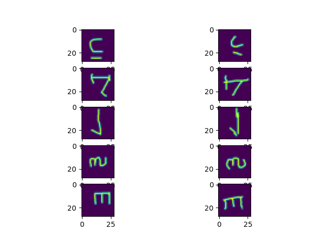

Model-Agnostic Meta-Learning
Model-Agnostic Meta-Learning(MAML)是元学习中经典算法之一，今天准备来实现一下。
基础概念
首先从具体例子的角度进行解释，对于数学证明先按下不表。MAML的主要给出一个被显式训练的自适应模型参数(与具体任务无关)，利用自适应模型参数面对全新的task只需在少量数据上进行几次梯度更新即可取得良好的泛化性能。
task base learning
MAML中以一个task作为训练的最小样本，每一个task使用nway与kshot描述它，比如如果使用omniglot数据集，此数据集中有许多个文件夹，每个文件夹表示一个字符，其中包含了20个不同的人对这一字符的书写。在数据生成的过程中，随机选取nway个文件夹作为类别，每个文件夹采样kshot个样本。
如下图所示,nway=5,kshot=1时的采样结果，即一共5个类别，每个类别采样kshot×2个样本。这里采样kshot×2个样本是为了将一半的样本作为support set(一个batch中的训练集)用于maml方法自适应，另一半作为query set(一个batch中的测试集)用于常规的梯度下降。

compute graph
maml需要找到一个在全局的task下具备较优泛化能力\(\theta\)。设我们一个batch中得到了support set为\(S = \{x_s, y_s\}\)，query set为\(Q = \{x_q, y_q\}\)。那么开始执行计算图：
首先maml算法将原始参数\(\theta\)设置为当前网络的参数，并设置当前内循环迭代次数\(i=0\)，即\(\theta_0=\theta\)。然后开始自适应的过程，使用参数为\(\theta_{i}\)的神经网络\(f(\theta_{i})\)对support set进行推理，并对预测结果与\(y_s\)进行损失得到\(L_{i}^s\)，对此损失进行求导并利用maml独立的学习率\(\alpha\)对参数\(\theta_{i}\)进行更新，得到新的\(\theta_{i+1}\)。当内循环迭代次数大于阈值\(N\)时，结束自适应过程后使用query set对原始参数进行一次梯度下降并更新原始参数。
NOTE:原论文默认保留计算图，即后续的梯度下降是需要求二阶导数的。并且原论文中N默认为1，即只自适应一次。

根据计算图，我们可以了解到，MAML实际上是要求最终的参数\(\theta\)进行\(N\)次自适应后能对task较好拟合。
Implement
我本来打算参考learn2learn的方法在megengine中进行实现，但是实现过程中还是碰到不少问题，比如megengine其实是底层默认自动构建图的，也就是和tensorflow 2有点类似，因此强制替换模型参数会破坏计算图。但是我又不想按原论文的实现那样，将所有参数手动指定，这样根本没办法随意修改模型，目前我想找一个能不破坏模型构建过程的方法将模型参数托管到全局字典中，前向推理的过程中再取对应参数计算，但是找不到。。希望能找到一些灵感。